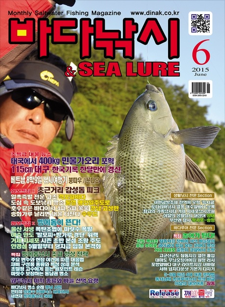
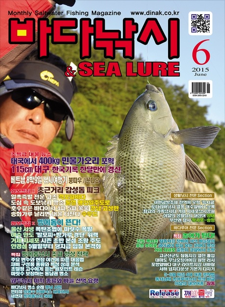

낚싯대에 장치한 릴의 손잡이를 돌려 줄을 풀었다 감았다 하면서 물고기를 낚는 도구. 또는 그것으로 하는 낚시질.
[비슷한 말] 던질낚시.
민물에서 민대나 릴대를 사용하는 낚시입니다. 지렁이, 떡밥 등의 미끼를 이용하고, 강이나 저수지 등의 민물에서 낚싯대(장대, 릴), 바늘, 줄, 찌, 미끼만 준비하면 누구나 손쉽게 할 수 있습니다. 민물낚시는 바다낚시보다 쉬워 처음 접하는 분들에게 가장 알맞은 낚시입니다.
낚싯대를 써서 하는 낚시질. [비슷한 말] 대낚.
가짜미끼(lure)를 이용하여 고기를 낚는 방법이다. 루어란 털·플라스틱·나무·금속 등으로 만든 인공미끼로써, 이를 얼마만큼 살아 있는 미끼처럼 보이게 하느냐가 관건이라 할 수 있다. 루어에는 여러 가지 종류가 있고 어종별로 나뉘어 있으므로 이를 잘 선택하는 것이 중요하다. 대낚시처럼 짐의 양이 적으므로 채비는 간단한 편이지만, 한 자리를 공략하지 않기 때문에 수몰된 나무나 물속의 돌이나 그물 등에 루어가 자주 걸리기도 하며, 고기를 기다리지 않고 쫓아다니기 때문에 상당한 체력이 요구되지만 장비가 간단해서 이동이 쉬운 것이 특징이다.